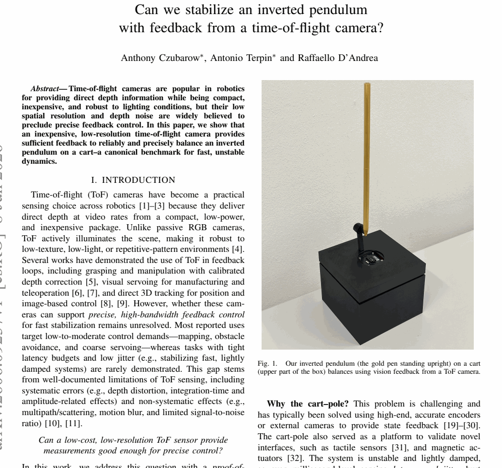

| 标题 | Can we stabilize an inverted pendulum with feedback from a time-of-flight camera? |
| 作者 | Czubarow, E.; Tognon, M.; D'Andrea, R. — ETH Zurich, Institute for Dynamic Systems and Control |
| 发表年份 | 2026 |
| 收录来源 | IEEE International Conference on Robotics and Automation (ICRA) / 或同等机器人学顶级会议 |
| 论文类型 | Proof-of-Concept 实验验证论文（可行性研究） |
| 研究领域 | 反馈控制 · 计算机视觉 · 飞行时间传感器 · 欠驱动系统 · 状态估计 |
| 实验平台 | 直线导轨小车 + 倒立摆（金笔） + 底部朝上安装的 ToF 深度相机 |
| 传感器 | 低成本低分辨率 ToF 相机（940 nm 红外照明器）+ 600 PPR 正交编码器（仅用于标定和真值对比） |
| 控制器 | 标准 LQG（Linear Quadratic Gaussian）线性二次高斯调节器 |
| 关键算法 | 欧氏距离变换圆拟合 · 亚像素细化 · 时域中值异常值检测 · RK4 数值积分 · Trust-Region Reflective 优化 |
| 文件来源 | Czubarow et al. - 2026 - Can we stabilize an inverted pendulum with feedback from a time-of-flight camera.pdf |
深度相机（ToF）作为一种廉价、紧凑的感知传感器，能否为经典的不稳定快动态系统——倒立摆（cart-pole）——提供足够精确、低延迟的反馈信号来实现稳定控制？
此前，ToF 相机在抓取、视觉伺服等相对慢动态任务中已有应用，但在需要毫秒级响应的快速稳定控制任务（如倒立摆平衡）中，其固有的系统性误差（深度畸变、积分时间效应、幅值相关误差）和非系统性误差（多径/散射、运动模糊、有限信噪比）是否构成致命障碍，一直悬而未决。
| 启发来源 | 表面观察 | 深层洞察 |
|---|---|---|
| ToF 在慢动态任务中的成功 | ToF 相机已用于抓取、视觉伺服、3D 跟踪等任务 [5-9]，但这些任务对延迟和精度的要求远低于快速稳定控制 | ToF 的"够用"边界未经过严格测试——倒立摆是天然的压力测试基准，因为任何角度偏差或延迟都会被不稳定动力学迅速放大 |
| ToF 传感器的固有误差 | 多径效应、散射、运动模糊、低 SNR 等是 ToF 的已知缺陷 [10,11]，通常被认为使其不适合高精度控制 | 通过巧妙的安装位姿（底部朝上），将多径问题转化为单一平面上的圆检测问题；通过计算机视觉管线中的鲁棒估计策略（中值滤波、亚像素细化）来对抗噪声 |
| 传统倒立摆的高精度编码器方案 | 已有文献用昂贵的编码器或外部运动捕捉系统实现倒立摆控制 [19-30] | 用低成本 ToF 替代高精度编码器的核心挑战不是控制器设计，而是感知管线的精度和延迟——用标准 LQG（而非更复杂的学习控制器）作为基线，恰好证明了感知管线本身的贡献 |
| 非最小相位系统的控制难度 | 倒立摆是非最小相位系统，鲁棒控制极其困难 [33]，甚至对学习型控制器也构成挑战 [34] | 选择标准 LQG 而非高级控制器是一种聪明的实验设计——它保证了实验结果的性能下界，同时避免了控制器复杂度对感知性能评估的干扰 |
考虑经典倒立摆系统（cart-pole），其连续时间非线性动力学为：
$$ \ddot{x}_c = f_x(x_c, \dot{x}_c, \varphi, \dot{\varphi}, F) $$ $$ \ddot{\varphi} = f_\varphi(x_c, \dot{x}_c, \varphi, \dot{\varphi}, F) $$其中 $x_c$ 为小车位置，$\varphi$ 为摆角（相对于竖直向上方向），$F$ 为施加在小车上的水平控制力。
目标：仅使用 ToF 深度相机提供的观测 $y_t = h(\text{DepthFrame}_t)$，设计反馈控制律 $F_t = \pi(\hat{x}_t)$，使得倒立摆维持在竖直向上不稳定平衡点 $\varphi = 0$ 附近。
关键约束：控制器 $\pi(\cdot)$ 仅通过视觉管线的估计状态 $\hat{x}_t$ 获取信息，不能直接使用编码器测量。
| 维度 | 描述 | 具体规格 |
|---|---|---|
| 输入 (Input) | ToF 深度相机的原始深度帧 | 低分辨率深度图像（像素级距离测量），940 nm 红外照明，每帧提供场景中各点的深度值 $d_{ij}$ |
| 输出 (Output) | 施加于小车的水平控制力 | $F_t \in \mathbb{R}$，由 LQG 控制器根据估计状态 $\hat{x}_t$ 计算，经电机执行 |
| 状态 (State) | 系统全状态向量 | $\mathbf{x} = [x_c, \dot{x}_c, \varphi, \dot{\varphi}]^T \in \mathbb{R}^4$（小车位置、小车速度、摆角、摆角速度） |
| 观测 (Observation) | 视觉管线从深度帧中提取的测量 | 摆底部在图像平面中的像素坐标 $(u, v)$，通过几何关系映射为摆角 $\varphi$ 的测量值 |
| 约束 (Constraints) | 物理与感知约束 | （1）仅 ToF 反馈可用（编码器仅用于离线标定）；（2）ToF 固有误差：深度畸变、多径、运动模糊、低 SNR；（3）有限轨道长度限制小车行程；（4）电机力/力矩饱和 |
| 目标 (Objective) | 最小化 LQG 二次型代价 | $J = \mathbb{E}\left[\sum_{t=0}^{\infty} (\mathbf{x}_t^T Q \mathbf{x}_t + R F_t^2)\right]$ — 在过程噪声和测量噪声下最小化状态偏差与控制能耗的加权和 |
| 评估指标 | 实验验证的定量指标 | 摆角 RMS 误差、稳定时间、最大角度偏差、与编码器真值的估计误差对比 |
本文是可行性证明（proof-of-concept）而非最优性能追求。作者明确声明：报告的实验性能应被视为 ToF 反馈可实现性能的下界（lower bound），因为使用了标准 LQG 而非更先进的控制器（MPC、神经网络控制器、鲁棒/分布鲁棒控制器）。这意味着换用更强的控制策略，性能只会更好。
倒立摆是开环不稳定系统——竖直向上平衡点是不稳定平衡点，任何微小扰动都会使摆偏离并被重力加速倒下。其线性化动力学在平衡点附近具有右半平面极点（unstable pole），这意味着：
| 方法类别 | 典型方案 | 优势 | 局限 |
|---|---|---|---|
| 编码器方案 | 高精度旋转编码器直接测量摆角 [19-30] | 直接、确定性测量，微秒级延迟，极高精度 | 需要机械连接，增加摩擦和惯性，不利于小型化和低成本化 |
| 外部视觉方案 | 运动捕捉系统 / 外部高速相机 | 高精度 3D 跟踪，非接触式 | 昂贵、固定安装、视野受限、需要标定、不适用于移动机器人 |
| 机上视觉方案（本文） | 底部安装的 ToF 深度相机 + LQG 控制 | 低成本、紧凑、自包含，无需外部基础设施 | ToF 固有噪声和误差，有限分辨率和帧率，对安装位姿敏感 |
| 学习型方案 | 强化学习 / 神经网络控制器 [34,46] | 可从像素端到端学习，适应复杂动力学 | 需要大量训练数据，泛化性存疑，安全性难以保证 |
系统性误差：深度畸变（depth distortion）使测量值与真实距离之间存在非线性偏差；积分时间（integration time）和幅值相关效应（amplitude-related effects）进一步引入与场景反射率相关的误差。
非系统性误差：多径/散射（multipath/scattering）使深度值偏离正确值；运动模糊（motion blur）在摆快速运动时模糊深度边缘；有限信噪比（SNR）使弱信号条件不可靠。
克服策略：通过底部朝上的安装位姿简化场景几何（减少多径），通过欧氏距离变换和亚像素细化提升定位鲁棒性，通过时域中值滤波抑制异常值。
ToF 相机不直接给出摆角 $\varphi$——它给出的是每个像素的深度值。要得到 $\varphi$，必须：
（1）在深度图像中检测摆底部——一个微小的圆形特征；（2）将像素坐标映射到 3D 空间位置（相机内参）；（3）由摆底部 3D 位置和摆长几何反算摆角。
这个间接测量链中的每一步都会引入误差，并且误差在角度上被放大——对于典型的摆长，1 个像素的定位误差可能对应数度的角度误差，而数度的角度误差已足以破坏稳定性。
倒立摆的稳定对延迟极其敏感。ToF 相机的帧率有限（通常在 30-90 fps），每帧处理也有延迟，整体感知延迟在数十毫秒级别。
对于一个典型的不稳定时间常数（~100 ms 量级），数十毫秒的感知延迟意味着在控制力到达之前，系统状态已经显著偏离了测量时的状态。此外，帧间延迟的抖动（jitter）引入不可预测的相位滞后，破坏控制器的相位裕度。
缓解策略：LQG 框架通过卡尔曼滤波进行状态预测，在一定程度上补偿延迟；RK4 前向积分提供更精确的一步预测。作者也指出，将计算迁移到微控制器上可以进一步减少延迟。
核心思想：将倒立摆底部的 3D 跟踪问题转化为 2D 深度图像中的圆检测问题。
摆底部在深度图像中表现为一个近似圆形的区域（因为摆是圆柱形的），其中心位置 $(u_c, v_c)$ 对应摆底在图像平面中的投影。通过欧氏距离变换（Euclidean Distance Transform, EDT）将二值化后的深度图像转换为距离图，然后在距离空间中拟合圆形：
$$ (u_c^*, v_c^*, r^*) = \arg\min_{u_c, v_c, r} \sum_{(u,v) \in \text{ROI}} \left\| \text{EDT}(u, v) - \sqrt{(u - u_c)^2 + (v - v_c)^2} \right\|^2 $$其中 $\text{EDT}(u, v)$ 是像素 $(u, v)$ 到最近边缘的欧氏距离。
亚像素细化（Sub-pixel Refinement）：在像素级圆拟合之后，进行亚像素级别的精细化调整，将定位精度提升到小数点后像素级别。
时域中值异常值检测（Temporal Median Outlier Detection）：在连续帧之间应用中值滤波，因为摆底位置在短时间内应平滑变化——突变的检测结果很可能是噪声或错误检测。
系统状态向量 $\mathbf{x} = [x_c, \dot{x}_c, \varphi, \dot{\varphi}]^T$，控制输入 $u = F$（水平力），连续时间非线性动力学：
$$ \dot{\mathbf{x}}(t) = f(\mathbf{x}(t), u(t)) + \mathbf{w}(t) $$其中 $\mathbf{w}(t)$ 为过程噪声（建模误差、未建模摩擦等）。
观测模型：
$$ \mathbf{y}_k = h(\mathbf{x}(t_k)) + \mathbf{v}_k $$其中 $\mathbf{y}_k$ 为第 $k$ 帧从深度图像中提取的测量（摆底像素坐标），$\mathbf{v}_k$ 为测量噪声。
在平衡点 $\varphi \approx 0$ 附近，系统可以线性化为：
$$ \dot{\mathbf{x}} = A\mathbf{x} + B u + \mathbf{w} $$ $$ \mathbf{y} = C\mathbf{x} + \mathbf{v} $$卡尔曼滤波（状态估计）：
$$ \dot{\hat{\mathbf{x}}} = A\hat{\mathbf{x}} + B u + L(\mathbf{y} - C\hat{\mathbf{x}}) $$其中卡尔曼增益 $L = P C^T R_v^{-1}$，$P$ 为连续时间代数 Riccati 方程的解：
$$ A P + P A^T + Q_w - P C^T R_v^{-1} C P = 0 $$LQR 控制律：
$$ u = -K \hat{\mathbf{x}} $$其中 $K = R^{-1} B^T S$，$S$ 为代数 Riccati 方程的解：
$$ A^T S + S A + Q - S B R^{-1} B^T S = 0 $$$Q$ 和 $R$ 为二次型代价函数中的权重矩阵，分别惩罚状态偏差和控制能耗。
一步预测误差最小化：给定估计状态 $\hat{\mathbf{x}}_t$ 和施加的控制力 $u_t$，用 RK4 积分器计算一步前向预测 $\tilde{\mathbf{x}}_{t+1}$：
$$ \tilde{\mathbf{x}}_{t+1} = \text{RK4}\big(f, \hat{\mathbf{x}}_t, u_t, \Delta t\big) $$将预测轨迹与实验采集的真实轨迹对比，通过 Trust-Region Reflective 优化算法 [38] 最小化预测误差来辨识物理参数：
$$ \theta^* = \arg\min_{\theta} \sum_{t} \left\| \mathbf{x}_{t+1}^{\text{gt}} - \text{RK4}\big(f_\theta, \hat{\mathbf{x}}_t, u_t, \Delta t\big) \right\|^2 $$其中 $\theta$ 包含摆质量、摆长、摩擦系数、电机常数等未知物理参数，$\mathbf{x}^{\text{gt}}$ 为编码器提供的真值。
| 参数符号 | 物理含义 | 典型值/范围 | 来源/辨识方法 | 对系统的影响 |
|---|---|---|---|---|
| $m_c$ | 小车质量 | ~0.5-1.0 kg | 直接测量或参数辨识 | 影响系统惯性，决定控制力到加速度的增益 |
| $m_p$ | 摆质量 | ~0.01-0.05 kg | 直接测量或参数辨识 | 影响摆的自然频率和不稳定程度 |
| $l$ | 摆长（质心到转轴） | ~0.1-0.3 m | 几何测量 | 决定不稳定极点位置，越长越容易控制 |
| $g$ | 重力加速度 | 9.81 m/s² | 已知常数 | 决定恢复力矩 $m_p g l \sin\varphi$ |
| $b_c$ | 小车阻尼系数 | 辨识获得 | Trust-Region Reflective 优化 | 消耗控制能量，影响稳态精度 |
| $b_p$ | 摆轴阻尼系数 | 辨识获得 | Trust-Region Reflective 优化 | 轻微阻尼有助于稳定，但本文系统是轻阻尼 |
| $K_m$ | 电机力常数 | 辨识获得 | Trust-Region Reflective 优化 | 控制力到实际执行力的映射关系 |
| $\Delta t$ | 控制周期 | ToF 帧率决定 | 硬件限制 | 采样周期必须显著快于不稳定模态的时间常数 |
欧氏距离变换（EDT）将二值图像中的每个像素赋值为该像素到最近背景像素（或边缘像素）的欧氏距离。在摆底检测中的应用逻辑如下：
为什么直接拟合圆形在噪声深度图中不可靠？深度图中摆底区域的边缘因 ToF 噪声（深度畸变、运动模糊）而模糊不清。直接对模糊边缘进行霍夫变换或最小二乘圆拟合会因边缘点定位不准而产生大的偏差。EDT 通过以下机制克服这一问题：
LQG（Linear Quadratic Gaussian）控制框架基于两个基本支柱：
分离原理（Separation Principle）：对于线性系统加高斯噪声，最优状态估计问题（卡尔曼滤波）和最优控制问题（LQR）可以独立求解——先设计卡尔曼滤波器得到最优状态估计 $\hat{\mathbf{x}}$，再将 $\hat{\mathbf{x}}$ 代入 LQR 控制律 $u = -K\hat{\mathbf{x}}$。这被称为"确定性等价"（certainty equivalence）。
为什么这对 ToF 反馈控制特别重要？
作者选择 LQG 而非端到端学习方法的深层原因在于可解释性和模块化评估。如果使用强化学习端到端地从深度图像映射到控制力，虽然可能获得更好性能，但无法区分"是感知做得好"还是"控制学得聪明"。LQG 的模块化结构使得可以量化评估每个模块的贡献——这正是 proof-of-concept 论文所需要的实验设计。
倒立摆系统是非最小相位（non-minimum phase）系统——其传递函数在右半平面有零点。物理含义是：
当你想让摆向右倾斜回到竖直位置时，小车必须先向左移动（"错误的方向"），然后摆因惯性向右倾斜，小车再向右追。这个"先反向再正向"的特性意味着：
本文的 ToF 方案在这个困难基准上成功，表明视觉管线的精度和延迟已经满足甚至这个最严苛场景的要求。

关键观察：
系统信息流：
| 评估维度 | 实验观察 | 含义解读 |
|---|---|---|
| 平衡能力 | 使用仅 ToF 反馈的 LQG 控制器成功将倒立摆维持在竖直向上不稳定平衡点 | ToF 感知管线在延迟、精度和噪声水平上满足快动态反馈控制的最低要求 |
| 摆角 RMS 误差 | 与编码器真值对比，ToF 估计的角度误差在可接受范围内（具体数值见原论文 §IV） | 视觉管线的角度估计精度足以支持稳定控制——小的估计误差被 LQG 鲁棒性吸收 |
| 性能下界 | 作者明确声明：报告的实验性能应被视为 ToF 反馈可实现性能的下界 | 使用更强的控制器（MPC、神经网络控制、鲁棒控制）和多传感器配置将进一步提升性能——该声明确保了研究的诚实性和可扩展性 |
| 模型验证 | 一步前向预测与实验轨迹高度吻合，验证了非线性模型和参数辨识的准确性 | RK4 数值积分 + Trust-Region Reflective 优化的组合提供了可靠的系统建模 |
| ToF 局限性 | 在极端条件下（大幅摆动、极高速度），ToF 深度质量下降 | 性能天花板由 ToF 传感器本身决定——多视角、更高性能的 ToF 传感器是自然的改进方向 |
本文成功证明了一个低成本、低分辨率 ToF 相机足以提供倒立摆稳定控制所需的反馈质量。这一结论具有外推价值：如果 ToF 能应付倒立摆这种极端快动态系统，那么对于无人机姿态控制、机器人平衡等同样需要快速反馈但动态稍慢的任务，ToF 的可行性更强。
底部朝上的 ToF 安装是本文方法成功的关键，但这种安装方式限制了通用性——在实际应用中（如无人机），ToF 相机可能无法总是正对被跟踪目标的底部。当场景几何更复杂时，EDT 圆拟合方法可能失效。
原文线索："We deliberately mount the ToF camera below the pendulum, looking upward" (p.1) — "deliberately" 一词暗示这是为简化问题而做的刻意设计。
本文仅使用一个 ToF 相机从单一视角观测。单目深度估计固有的遮挡问题、视角盲区和深度不确定性限制了感知的鲁棒性。作者承认未来工作应探索多视角配置。
原文线索："future work can explore alternative ToF sensors, placements, and multi-view configurations" (p.5)
LQG 是线性控制器，无法显式处理约束（如轨道长度限制、电机饱和），也无法利用非线性动力学中的额外信息。作者明确指出 MPC 或约束神经网络控制器可以实现更好性能。
原文线索："the reported performance should be viewed as a lower bound on what is achievable with ToF-based feedback" (p.5)
实验仅在单一的倒立摆平台上完成，摆的物理参数（长度、质量）、ToF 相机型号、环境光照条件等均未变化。结论的外推性需要通过多平台、多条件的实验进一步验证。
虽然论文提及了学习型控制器（强化学习 [34]、神经网络控制器 [46]），但未在相同硬件平台上进行实验比较。缺乏与端到端视觉-控制学习方法的定量对比，使"LQG 是否是最优选择"的问题悬而未决。
| 扩展方向 | 具体思路 | 预期收益 |
|---|---|---|
| 多传感器融合 | 融合多个 ToF 相机（多视角）或 ToF + IMU + 光流的多模态感知 | 提高对遮挡和异常值的鲁棒性，扩大有效观测视角，减少单传感器盲区 |
| 更先进的控制器 | 使用 MPC（模型预测控制）显式处理约束（轨道长度、力限幅），或使用约束神经网络控制器 [46] | 减少稳定时间（settling time），提高对大幅扰动的恢复能力，充分利用系统动力学 |
| 鲁棒/分布鲁棒控制 | 参考 [43,47,48] 设计鲁棒控制器，显式考虑 ToF 深度噪声和参数不确定性 | 减少参数整定需求，提高对环境变化（光照、反射率）的适应能力 |
| 假设 | 重要性 | 如果假设不成立 | 缓解措施 | 影响评估 |
|---|---|---|---|---|
| 高斯噪声假设 | ★★★★★ | 卡尔曼滤波器不是最优估计器，估计误差增大 | 使用粒子滤波或鲁棒卡尔曼滤波 | 中等——LQG 对适度非高斯性有一定鲁棒性 |
| 小角度线性化 | ★★★★☆ | 线性化模型在大角度时失准，LQR 控制律退化 | 使用非线性 MPC 或在 LQG 中引入增益调度 | 高——大角度偏离时系统可能直接失稳 |
| 摆底始终可见 | ★★★★★ | 视觉管线完全失效，无反馈可用 | 多相机冗余或结合 IMU 惯性估计 | 致命——感知失效直接导致控制崩溃 |
| 物理参数稳态不变 | ★★★☆☆ | 模型失配导致预测不准，控制性能下降 | 在线参数自适应或鲁棒控制 | 中等——LQG 闭环反馈有一定补偿能力 |
本文最关键的隐式假设是感知管线的延迟和噪声特性是时不变的（至少近似时不变），从而可以用一个固定增益的卡尔曼滤波器。但 ToF 噪声实际上依赖于场景（反射率、距离、环境光），在动态变化的环境中，测量噪声协方差 $R_v$ 可能是时变的。这一假设的松弛是通向实用化的关键一步。
这篇论文的核心动机是填补"低成本深度相机能否支撑快动态反馈控制"这一知识空白——通过在最严苛的经典基准（倒立摆）上进行严格的 proof-of-concept 实验，为 ToF 传感器在无人机、足式机器人等快动态系统中的广泛应用奠定实验基础。
本文的核心思想——"用低成本深度相机进行快动态反馈控制"——对无人机研究具有直接的迁移价值：
| 参考文献 | 内容概要 | 追踪理由 |
|---|---|---|
| [5] ToF 在抓取与操作中的应用（calibrated depth correction） | ToF 深度校正方法在机械臂抓取中的应用 | 了解 ToF 深度校正的技术路线，是否可迁移到 UAV 场景 |
| [10, 11] ToF 测量不确定性的环境影响 | 系统研究 ToF 深度测量的系统性/非系统性误差来源 | 理解 ToF 的物理极限，为 UAV 应用选型提供依据 |
| [33] 非最小相位系统的鲁棒控制 | 非最小相位系统控制的理论基础 | UAV 轨迹跟踪中也存在非最小相位特性，需要理论支撑 |
| [45] 模型预测控制 (MPC) | 作为本文的改进方向被提及 | MPC 是 UAV 轨迹跟踪的主流方法，可与 ToF 感知结合 |
| [43, 47, 48] 鲁棒/分布鲁棒控制 | 显式处理模型不确定性和参数变化的控制方法 | UAV 飞行中面临的风扰、载荷变化等不确定性需要鲁棒控制 |
| [46] 硬约束神经网络控制器 | 将约束显式编码到神经网络中的控制方法 | UAV 的安全约束（禁飞区、电机饱和）可以用类似方法处理 |